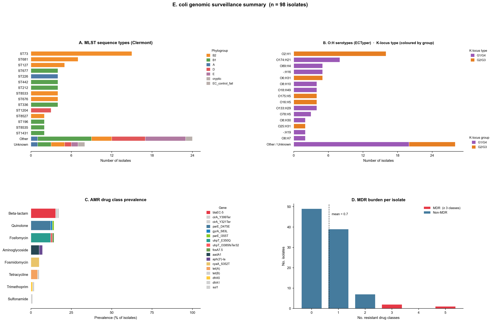
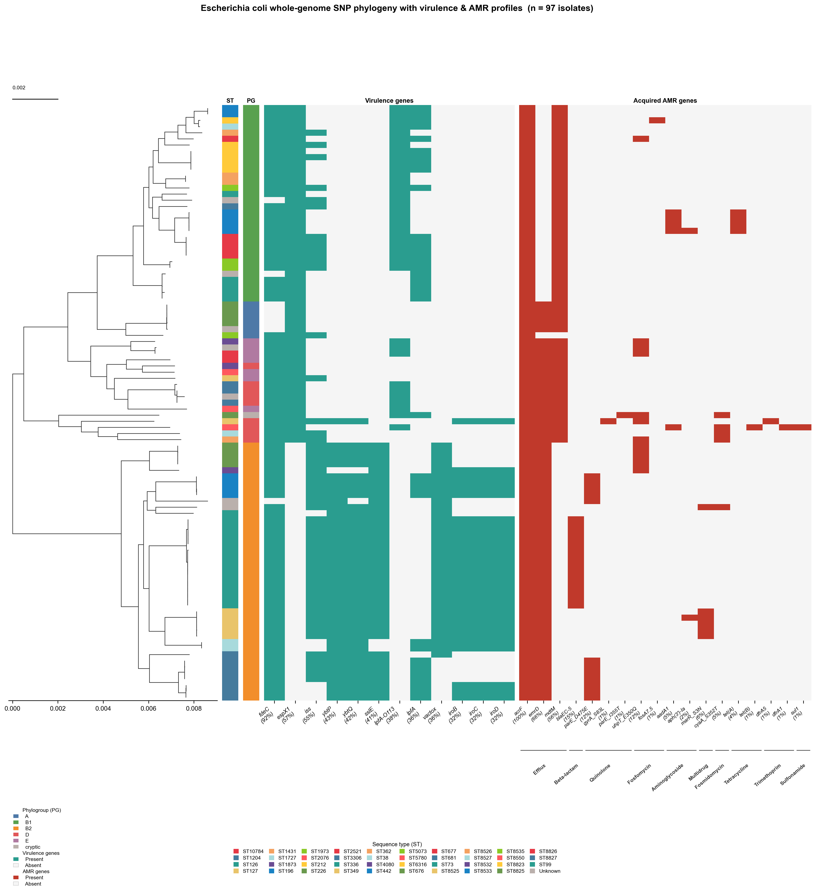
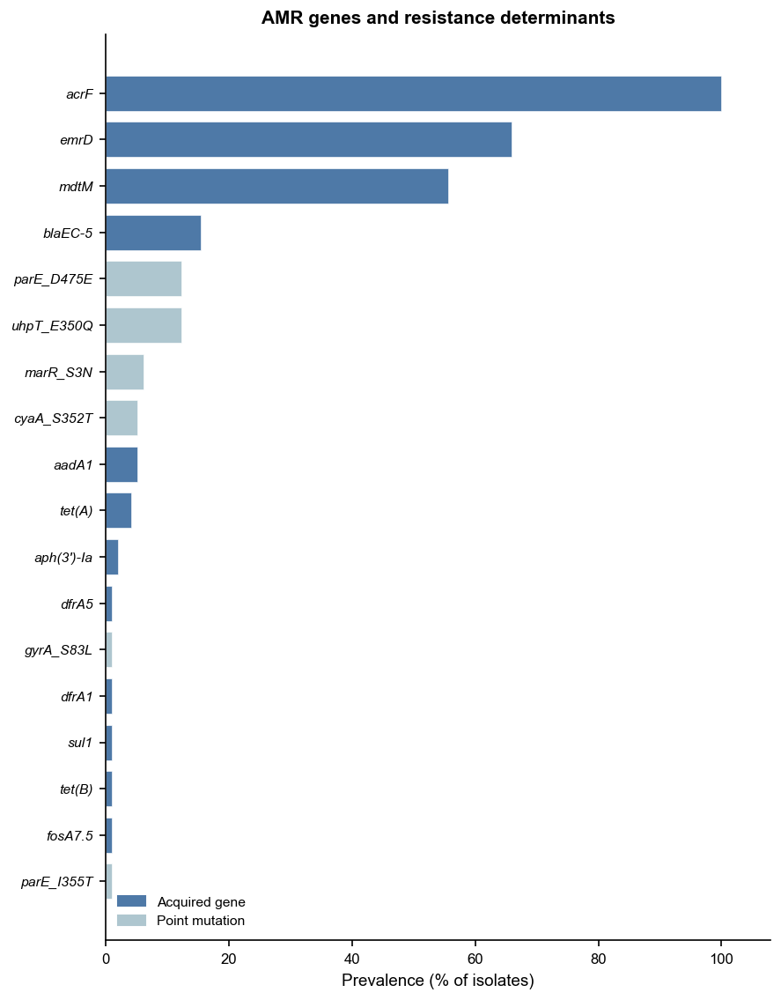
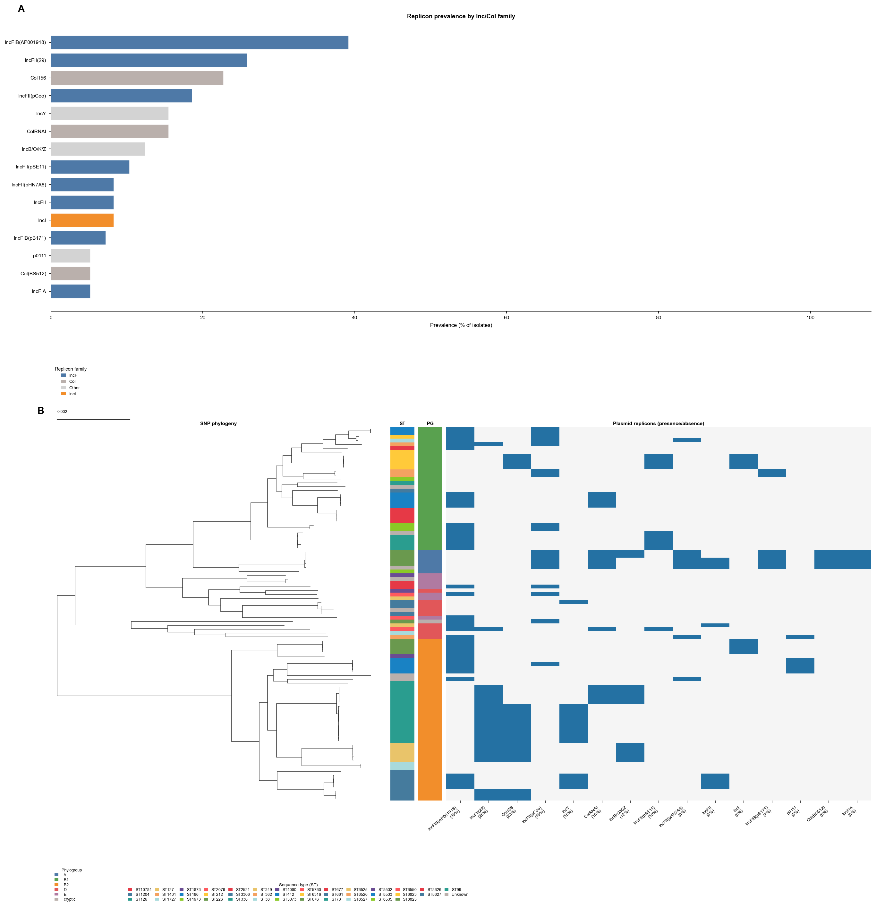
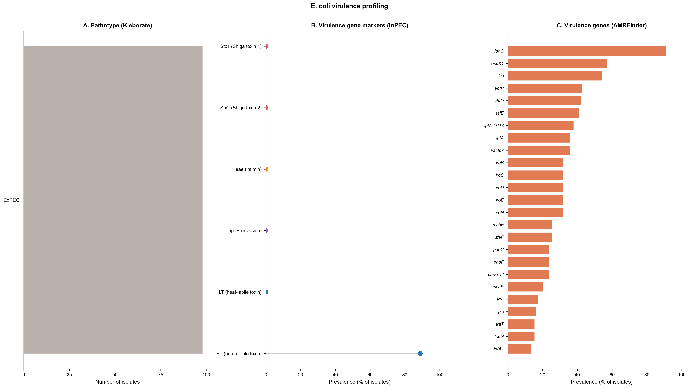
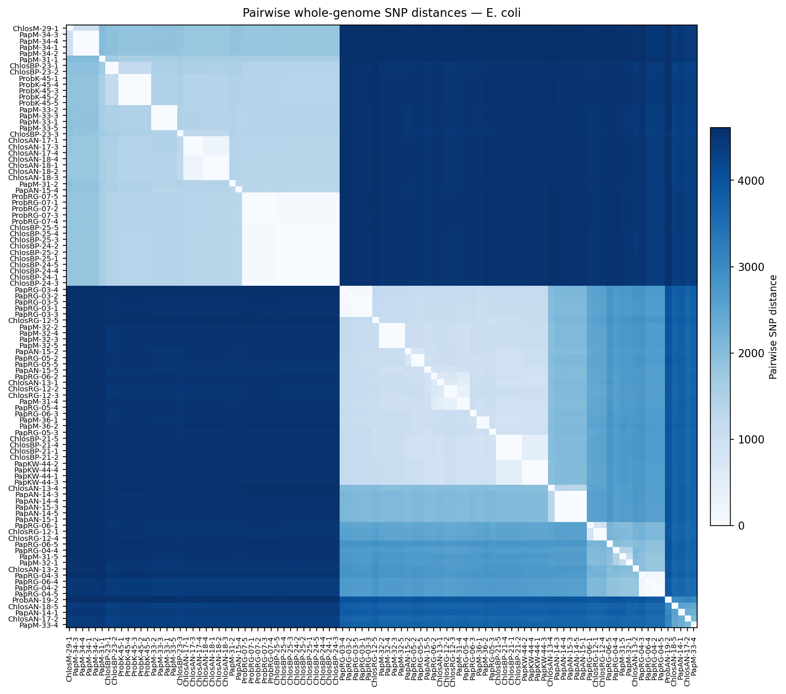
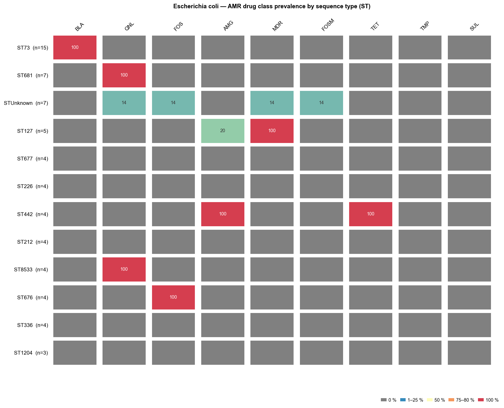
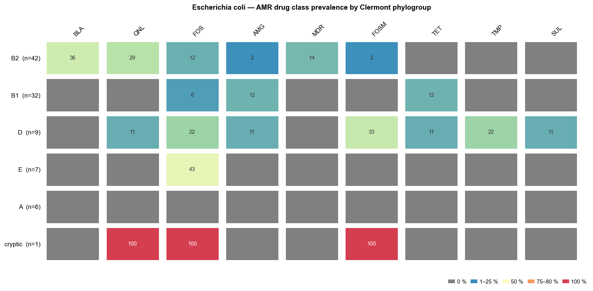
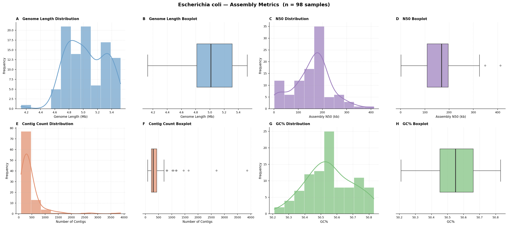

This vignette demonstrates the outputs produced by enteric-typer when run on 98 E. coli genome assemblies from commensal gut isolates recovered from three non-human primate (NHP) species in The Gambia.
Genomes are from Foster-Nyarko et al. (2020) Microbial Genomics 6(10): mgen000428, a study characterising the genomic diversity and antimicrobial resistance of commensal E. coli from NHP gut microbiomes sampled across multiple field sites in The Gambia. All raw sequencing reads and polished assemblies are deposited at NCBI under BioProject PRJNA604701 (SRA: SRP247121).
| Host species | Common name | Code prefix | n |
|---|---|---|---|
| Chlorocebus sabaeus | Green monkey | Chlos |
36 |
| Papio papio | Guinea baboon | Pap |
51 |
| Piliocolobus badius | Western red colobus | Prob |
11 |
Sample names encode the host species prefix, field site code, and
individual ID (e.g., PapRG-04-2 = Papio papio,
River Gambia site, animal 04, isolate 2).
All 98 SRR run accessions are available from BioProject PRJNA604701. A selection of representative accessions is shown below; the full list is available in the supplementary data of Foster-Nyarko et al. (2020).
| Sample | SRR Accession |
|---|---|
| ChlosAN-13-1 | SRR11015047 |
| ChlosAN-13-2 | SRR11015046 |
| ChlosBP-21-1 | SRR11015041 |
| PapAN-14-1 | SRR11015015 |
| PapM-31-1 | SRR11014999 |
| PapRG-03-1 | SRR11014976 |
| ProbRG-07-1 | SRR11014950 |
| ProbK-45-1 | SRR11014955 |
(Full accession table: PRJNA604701)
CONDA_SUBDIR=osx-64 nextflow run main.nf \
-profile conda,arm64 \
--input_dir nhp_e_coli_genomes/ \
--outdir results/ecoli_typer_results.tsv)One row per sample. Key columns:
| Column | Description |
|---|---|
mlst_st |
Achtman 7-gene MLST sequence type (ecoli_achtman_4
scheme) |
mlst_st_complex |
MLST ST complex (where defined) |
kleborate_phylogroup |
Clermont phylogroup (A/B1/B2/C/D/E/F/G) assigned by Kleborate |
ectyper_serotype |
O:H serotype predicted by ECTyper |
ectyper_O / ectyper_H |
Individual O and H antigen calls |
k_group / k_locus /
k_type |
K-locus group (G1/G4 or G2/G3), locus ID, and type |
k_confidence |
Kaptive typing confidence (Perfect / High / Low / Untypeable) |
kleborate_pathovar |
Pathotype markers detected by Kleborate (e.g., STEC, EAEC) |
amrfinder_acquired_genes |
Acquired AMR genes (intrinsic genes excluded by AMRrules) |
amrfinder_drug_classes |
Drug classes with acquired resistance |
plasmidfinder_replicons |
Plasmid replicon types detected by PlasmidFinder |
Figure 1. Population-level summary of 98 Escherichia coli isolates from non-human primate gut microbiomes in The Gambia. Four panels are shown. (A) Sequence type (ST) distribution: horizontal bar chart of the top sequence types by count (Achtman 7-gene scheme), with bars coloured by Clermont phylogroup. Commensal E. coli from NHP hosts span a diverse range of STs dominated by B2 (ST73, ST127) and B1 lineages, reflecting the broad phylogenetic diversity typical of gut commensals. (B) O:H serotype distribution coloured by K-locus group: stacked horizontal bar chart where each bar represents a serotype (ECTyper) and fill colours indicate the K-locus group—purple for G1/G4, orange for G2/G3—enabling rapid assessment of the K-locus landscape across circulating serotypes. Both G1/G4 and G2/G3 loci are represented across the dataset. Serotypes not in the top 15 are grouped as “Other / Unknown”; bars retain the K-locus group colours of their constituent isolates. A secondary legend shows individual K-locus types within each group. (C) Acquired AMR drug class prevalence: horizontal bar chart showing the proportion of isolates carrying at least one acquired resistance gene per drug class, with intrinsic resistance genes excluded. (D) Multi-drug resistance (MDR): histogram of the number of resistant drug classes per isolate, with MDR isolates (≥ 3 classes) highlighted in red.

Figure 2. Whole-genome SNP phylogeny of 98 Escherichia coli NHP isolates annotated with sequence type, Clermont phylogroup, virulence, and acquired AMR profiles. The maximum-likelihood tree was inferred by IQ-TREE 2 (ModelFinder Plus automatic model selection) from a whole-genome SNP alignment generated by SKA2 (split k-mer alignment, k=31) without a reference genome. Reading left to right, annotation strips show: sequence type (ST) (coloured by unique ST, legend below the figure); Clermont phylogroup (A/B1/B2/C/D/E/F/G; coloured by group); virulence gene presence/absence (VFDB; teal = present, light grey = absent); and acquired AMR gene presence/absence (red = present, light grey = absent). Gene names are labelled along the bottom x-axis. The scale bar (top left) represents substitutions per site.

Figure 3. Prevalence of acquired antimicrobial resistance genes across 98 Escherichia coli NHP isolates. Horizontal bar chart showing the number of isolates carrying each acquired AMR gene detected by AMRFinder Plus. Resistance genes are grouped and labelled by drug class along the x-axis. Intrinsic resistance genes (as classified by AMRrules) are excluded from the figure. The relatively low overall AMR prevalence is consistent with the commensal, non-clinical source of these isolates.

Figure 4. Plasmid replicon overview across 98 Escherichia coli NHP isolates. Two-panel figure summarising plasmid replicon diversity. (A) Horizontal bar chart of replicon prevalence (% of isolates), with bars coloured by Inc/Col replicon family. IncF-group replicons (IncFIB, IncFII variants) dominate, consistent with the broad host range of IncF plasmids in commensal E. coli. Col-type small replicons (Col156, ColRNAI) are also prevalent. Drug-class breakdown by AMR co-occurrence is not shown: these are fragmented short-read assemblies in which replicon sequences and AMR gene cassettes routinely land on different contigs of the same plasmid, making same-contig attribution unreliable. (B) Midpoint-rooted whole-genome SNP phylogeny (IQ-TREE 2) with ST and Clermont phylogroup annotation strips and a per-isolate plasmid replicon presence/absence heatmap (blue = present, white = absent).

Figure 5. Prevalence of virulence factor genes across 98 Escherichia coli NHP isolates. Horizontal bar chart showing the number of isolates carrying each virulence gene detected by AMRFinder Plus (virulence gene module). Genes are ordered by prevalence. The presence of pathotype-associated virulence factors (e.g., STEC, EAEC, ETEC markers) among commensal NHP isolates is consistent with findings from the original study (Foster-Nyarko et al. 2020), which noted that NHP E. coli carry diverse virulence repertoires despite their commensal context.

Figure 6. Pairwise whole-genome SNP distance heatmap for 98 Escherichia coli NHP isolates. Symmetric heatmap of pairwise SNP distances computed from the SKA2 whole-genome SNP alignment. Samples are ordered by hierarchical clustering. Colour intensity encodes SNP distance (lighter = more closely related, darker = more divergent). Clusters of closely related isolates reflect shared STs or isolates from the same host animal, consistent with the structured sampling design of the original study.

Figure 7. AMR drug class prevalence by MLST sequence type (ST) across 98 Escherichia coli NHP isolates. Tile heatmap showing the percentage of isolates within each ST carrying acquired resistance to each drug class, as detected by AMRFinder Plus. Rows represent the most common STs (Achtman 7-gene scheme), sorted by isolate count; columns represent drug classes sorted by overall prevalence. Cell colour encodes percentage: grey = 0 %; cream through orange to dark red = low to high prevalence; purple = 100 %. Percentage values are shown inside each cell. Intrinsic resistance genes and efflux-associated classes are excluded.

Figure 8. AMR drug class prevalence by Clermont phylogroup across 98 Escherichia coli NHP isolates. Tile heatmap showing the percentage of isolates within each Clermont phylogroup carrying acquired resistance to each drug class. Rows represent phylogroups (assigned by Kleborate) sorted by isolate count; columns represent drug classes sorted by overall prevalence. Colour and label encoding are identical to Fig 7.

Figure 9. Assembly quality metrics for 98 Escherichia coli isolates from non-human primates in The Gambia. Eight-panel figure summarising per-assembly statistics computed by enteric-typer, presented as paired histogram and box plot for each metric. (A–B) Genome length (bp). (C–D) N50 (bp). (E–F) Number of contigs. (G–H) GC content (%). Dashed reference lines indicate expected values for Escherichia coli (genome length ~5.0 Mb; GC% ~51 %).

Foster-Nyarko E, Alikhan N-F, Ravi A, Thilliez G, Thomson NM, Baker D, Kay G, Cramer JD, O’Grady J, Antonio M, Pallen MJ (2020). Genomic diversity of Escherichia coli isolates from non-human primates in the Gambia. Microbial Genomics 6(10): mgen000428. https://doi.org/10.1099/mgen.0.000428